Scaling Your Talents
I grew up with HTML. I was on the internet before browsers existed, back when Gopher was the hot new thing and you navigated by typing commands. I've watched every wave of technology transform how we work, from the first web pages to mobile apps to cloud computing.
This weekend, something clicked that I haven't felt in years.
The $250 Problem
My daughter runs a small business that needed a booking system. Like most small business owners, she was paying $250 a month for a SaaS platform that was decent but generic. It did 80% of what she needed and 40% of what she didn't. The usual story.
I decided to kick the tires on Claude Code. A few hours later, I had a working booking system tailored exactly to her workflow. Not a prototype. Not a demo. A production-ready solution.
Monthly cost: about $2.50 in hosting.
That's not a typo. From $250 to $2.50. A 99% reduction.
This Isn't About AI
Here's what most people miss: I didn't suddenly become a better programmer. I've always known HTML, CSS, enough JavaScript to be dangerous, and how systems fit together. What changed is that I can now move at the speed of my ideas instead of the speed of my typing.
Claude Code and tools like Cowork haven't made me smarter, but they've made my existing knowledge scale.
Thirty years of understanding how technology works, how users think, and how systems should flow is suddenly worth 10x more because I'm not bottlenecked by implementation details. I describe what I want, iterate in real-time, and ship in hours instead of weeks.
Digital Empowerment, Not Replacement
The AI discourse is exhausting. Will it take our jobs, is it thinking, can we trust it? Meanwhile, the people actually using these tools are too busy building things to argue about it.
What I experienced this weekend wasn't artificial intelligence. It was digital empowerment. It was my decades of experience finally having a tool that could keep up.
If you've spent years learning how things work, whether that's code, design, marketing, operations, or anything else, AI doesn't replace that knowledge. It amplifies it, lets you do in hours what used to take weeks, and removes the friction between knowing what should exist and making it exist.
The New Interface
We're witnessing a fundamental shift in how humans interface with digital systems. For 30 years, we've bent ourselves to fit the machine, learning syntax, memorizing commands, and adapting to interfaces designed by engineers for engineers.
Now the machine bends to us. We describe, we iterate, we create.
This isn't about replacing human expertise; it's about finally having tools worthy of it.
Ready to scale your talents? Let's talk or join us in Discord.